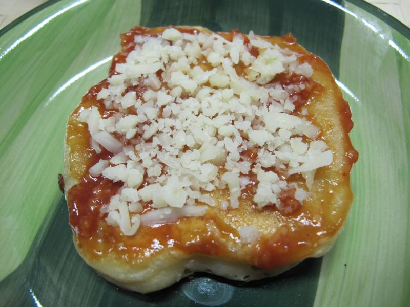
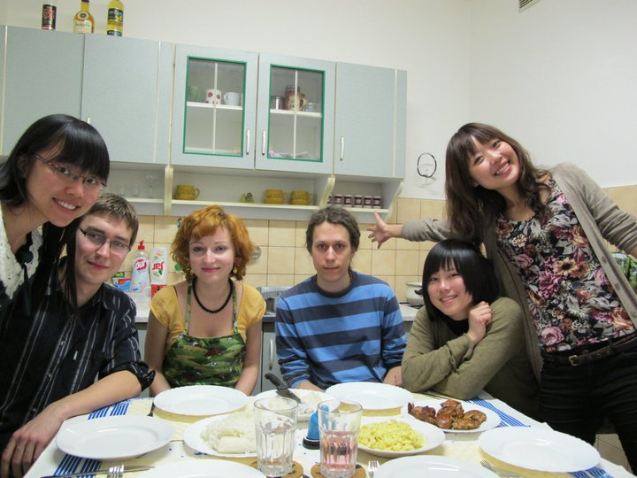

I’ve promised to write the recipe of “langoš” in english for my Erasmus friends and I am so sorry that I wasn’t able to fulfil my promise sooner. So now I’ll try to rectify it with my translation and I hope that my recipe will be understandable enough o:)…

Our delicious langoš :)!
So what should we buy in the shop? We will need:
- 500 grams of flour
- 200 grams of white yoghurt
- 42 grams of “droždí” (yeast)
- one baking powder
- 1/4 liter of milk
- 1 little spoon of sugar
- a pinch of salt
- oil for frying
- garlic
- ketchup
- chees (the “Eidam” type)
We put warmish milk, a little spoon of sugar and a normal spoon of flour into a bowl, crumble the cube of yeast into it and let about 10 minutes leaven. Then we prepare another bowl and we mix flour, yoghurt, a pinch of salt and baking powder in it. We add the mixture from the first bowl, make a dough and immidiately create “langoše” which we fry on the hot pan with oil. When our “langoše” are done we smear them with ketchup mixed with mashed cloves of garlic (I recommend about 4 or 5 cloves but it depends how much do you like garlic and if you want to kiss somebody afterwards :D…). At the end we grit our “langoše” with grated cheese. And that’s all. Quite easy, isn’t it? Bon apetit :-) !!!

Photo from our goodbye and cooking party :)
If you don’t understand anything you are welcome to ask (in comments under this recipe or on Facebook ;)). Enjoy!
Komentáře (2)
Komentáře jsou uzavřené.